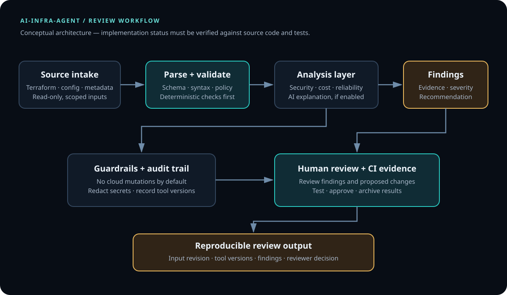
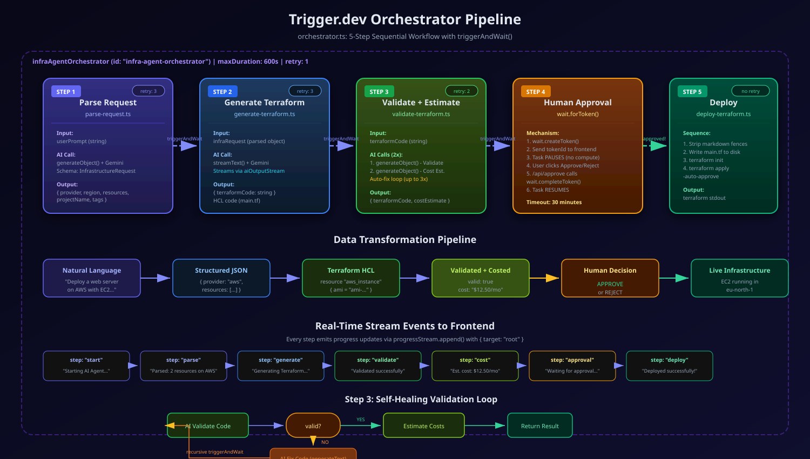

Typed intent parsing
parse-request.ts uses Gemini and a Zod schema to turn a natural-language request into a structured infrastructure specification.
TypeScript · Next.js · Terraform · AI
AI-assisted infrastructure analysis for cloud environments.

ARCHITECTURE / SOURCE-BACKED
The source repository describes a Next.js interface and API routes backed by Trigger.dev tasks, Google Gemini through the Vercel AI SDK, schema validation with Zod, and Terraform generation and execution. The diagrams below are copied from the project's own architecture assets.


src/trigger/orchestrator.ts: parse, generate, validate/estimate, wait for approval, and run the deploy task.parse-request.ts uses Gemini and a Zod schema to turn a natural-language request into a structured infrastructure specification.
generate-terraform.ts streams generated HCL to the UI. validate-terraform.ts asks the model to review code and may request fixes; this is not equivalent to running the Terraform CLI validator.
The orchestrator creates a Trigger.dev wait token and waits for an approval result before calling the Terraform deployment task.
Source repository ↗ · README and setup ↗ · Orchestrator source ↗
REPRODUCIBILITY / LOCAL BUILD
The following commands are grounded in the repository's package.json and README. They install the locked dependencies and run the Next.js production build; they do not deploy infrastructure or prove a successful cloud run.
git clone https://github.com/DataOpsInnovator/ai-infra-agent.git cd ai-infra-agent npm ci npm run build
For local development:
cp .env.example .env # Set Trigger.dev and Google Gemini credentials in your local .env npm run dev # In a second terminal, from the repository: npm run trigger:dev
Use only test credentials and a sandbox cloud account. Do not commit .env or expose secrets in logs or screenshots.
Capture the checked-out commit SHA, Node/npm versions, output and exit code from npm ci and npm run build, plus the corresponding CI run if one exists.
The current package.json defines dev, build, start and Trigger.dev development scripts, but no test or lint script. Do not claim unit-test coverage until tests and an executable test command are added.
The current validator task uses an LLM to inspect Terraform and estimate cost. For stronger evidence, add isolated CLI checks such as terraform fmt -check, terraform init -backend=false, and terraform validate in a sandboxed CI job before any apply step.
SECURITY REVIEW / IMPORTANT LIMITATIONS
A code review of the current public source identifies important gaps to address before connecting production cloud credentials. These are implementation observations, not claims that the application has been penetration-tested.
src/trigger/deploy-terraform.ts invokes terraform init and terraform apply -auto-approve. The README's demo-mode wording should be reconciled with this implementation. Keep the project isolated until an explicit safe execution mode is enforced.
src/app/api/approve/route.ts accepts a token ID and approval payload but does not show application-level user authentication or authorization. Bind approvals to an authenticated user and a specific run, validate input, and audit decisions.
LLM review is advisory and can miss syntax or policy errors. Add Terraform CLI validation, policy-as-code, secret scanning, restricted execution, plan review, and explicit least-privilege credentials before deployment.
No production deployment, passing build, passing tests, security certification, cost saving, or performance result is claimed here. Verify each by running the documented workflow and retaining the output. Use a disposable sandbox, not production credentials.
01 / PROBLEM
Infrastructure reviews can involve repetitive inspection of resources, configuration and IaC patterns. The goal is to accelerate analysis while keeping changes reviewable and under human control.
02 / SYSTEM FLOW
Cloud discovery → IaC analysis → security, cost and reliability findings → recommendations → human review
03 / PRODUCTION CONSIDERATIONS
Apply least privilege, protect credentials, scan artifacts and require appropriate review gates.
Plan for failure, observable runtime behavior, rollback or recovery and tested runbooks.
Keep configuration versioned, modular and documented.
04 / ENGINEERING VALUE
Add measurable outcomes only when substantiated. No cost or performance figures have been invented for this case study.